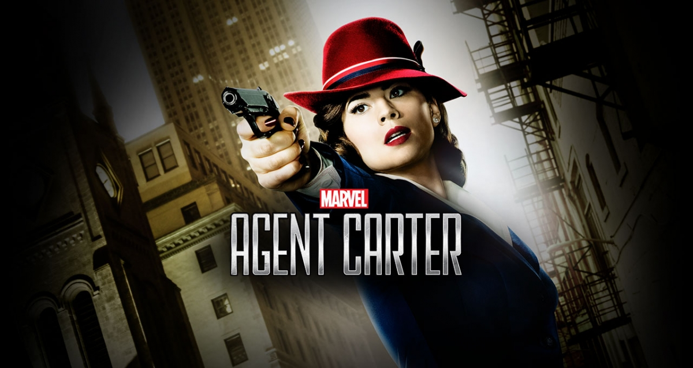
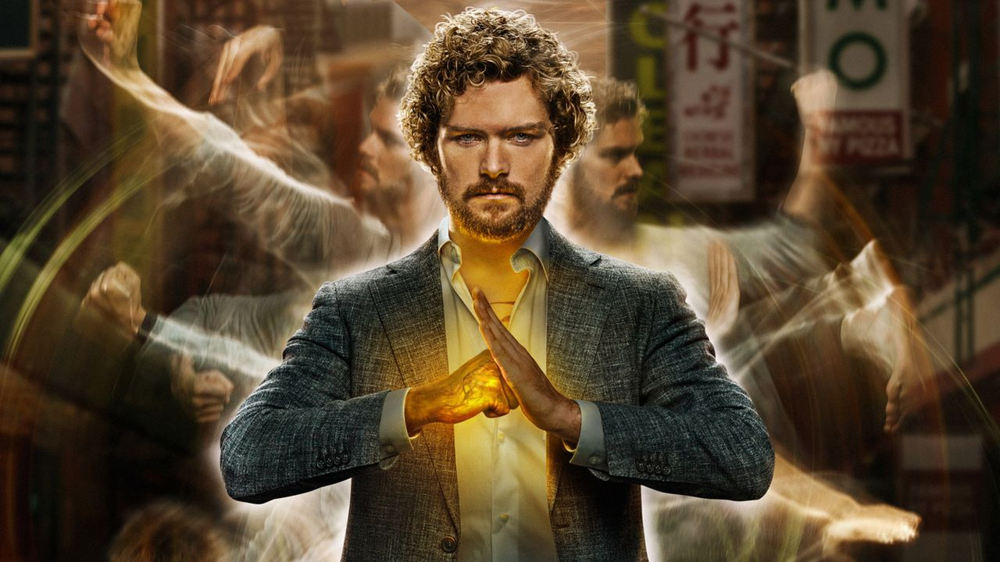
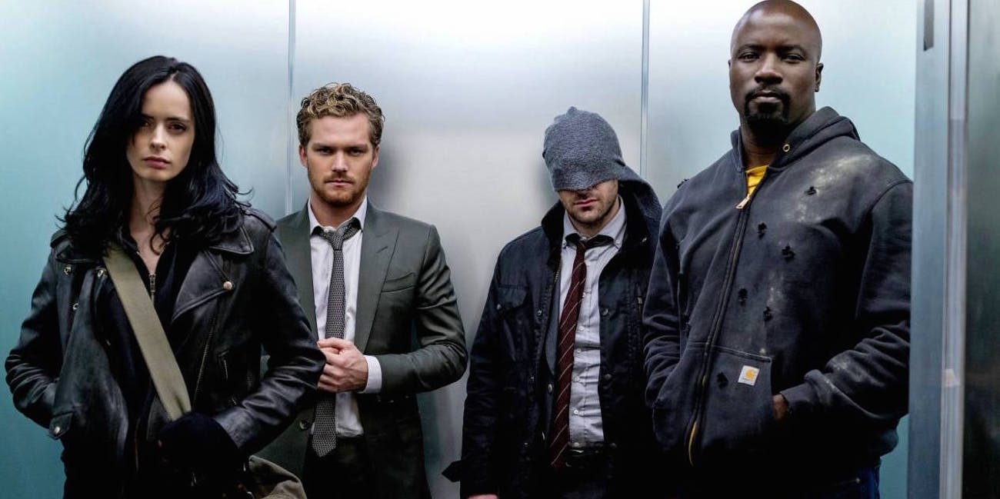
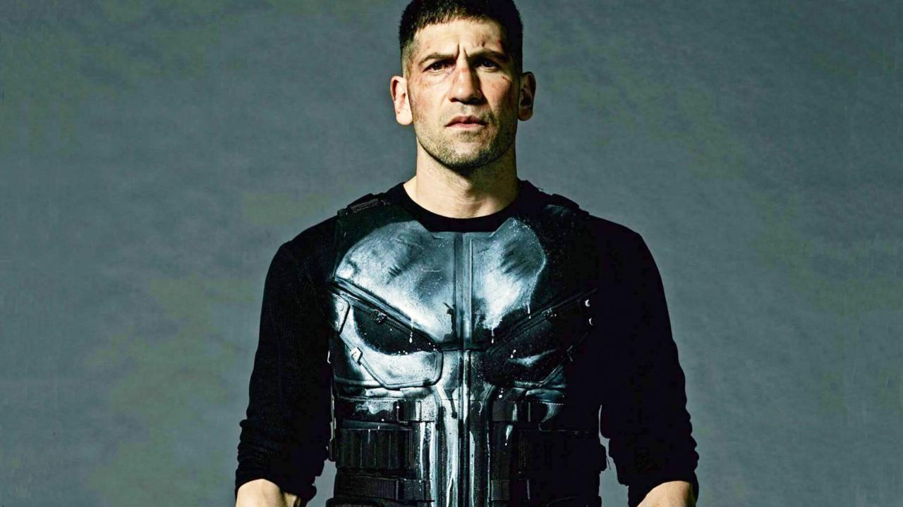

A Guide to the TV Shows
Below you will find descriptions of the eight major shows that make up the small screen portion of the MCU. I am not super familiar with a majority of these shows because I have not had the time to invest in diving into their worlds, so the descriptions below will be pretty limited to just plot summaries for each show. I am only familiar with the first few seasons of Agents of SHIELD and Agent Carter, so keep that in mind.
Agents of SHIELD

Agents of SHIELD was the first show to enter the MCU and followed a small team of SHIELD agents as they navigated the world after the events of the first Avengers movie. Most importantly, the show brought back the recently deceased character of Phil Coulson to lead the team of Agents. The show revolves around the team of agents handling strange new cases and later cases involving the fall of SHIELD, rise of HYDRA, and inhumans.
Agent Carter
The two season miniseries follows the story of Peggy Carter after the events of the first Captain America and World War Two. Even though she was a high level agent for the Strategic Scientific Reserve (SSR) during the war, she now finds herself stuck with secretarial duties when the men return home from the war. In the first season she must balance the routine office work with secret mission, to assist Howard Stark clear his name when he is accused of treason. In the second season, Carter goes to Los Angeles to deal with new atomic threats.
Daredevil

The Netflix original series follows Matthew Murdock, a lawyer in the New York City neighborhood of Hell’s KItchen who was blinded in a chemical accident as a child. Instead of being limited by his blindness, his other senses have become heightened and he uses that skills as well as martial arts training to fight crime in the city by night. His time as Daredevil has him uncovering a criminal underworld led by Wilson Fisk as well as other vigilantes.
Jessica Jones

This is another Netflix original series that takes place in the same neighborhood of Hell’s Kitchen as Daredevil. Jessica Jones, used to be a superhero with super strength, but a tragedy put an end to her superhero career. Now she is a private detective for her own agency, Alias Investigations, which seems to focus on cases involving people with special abilities. Jones isn’t trying to save the world, but she is still trying to do good and get by day to day while also dealing with her own PTSD.
Luke Cage

After a sabotaged experiment leaves him with super strength and unbreakable skin, the titular character Luke Cage becomes a fugitive who is trying to rebuild his life in Harlem, New York City. Pretty soon though, he is pulled out of the shadows and is forced to confront his past and fight for the city.
Iron Fist
After his family is killed in a plane crash on an expedition in China, Danny Rand is taken in by monks of the mystical lost city of Kun-Lun, where he was taught a magical fighting style the ability to summon the power of the Iron Fist. After being missing and presumed dead for fifteen years, Rand returns to New York City to reclaim his parents company. When a threat emerges, he must choose between fighting the criminal element corrupting the city around him and reconnecting with his family's legacy.
The Defenders
The Defenders is another Netflix original series in the MCU that brings together the heroes of the other tv series. Daredevil, Jessica Jones, Luke Cage, and Iron Fist join together to form The Defenders. They have one goal in mind: save New York City from their mysterious common enemy, the Hand.
The Punisher
This is another one of Netflix’s MCU series. The Punisher is the story of former Marine Frank Castle who becomes a vigilante known as “The Punisher” in order to avenge the murders of his wife and children. While on his mission for revenge, Castle uncovers a deep conspiracy in the New York criminal underworld. While he is not part of the Defenders, he does cross paths with some of the other characters of the other Netflix series.